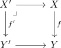
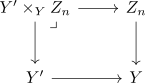
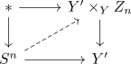
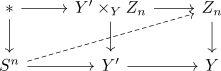
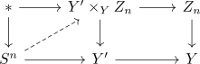

Moore-Postnikov tower and pullback
Proposition
Let $f: X \rightarrow Y$ be a serre fibration and $\{Z_n\}$ a Moore-Postnikov tower. Then for a pullback digaram

Then the pullback

forms also a Moore-Postnikov tower for $f': Y' \rightarrow X'$
\begin{displaymath}
\begin{tikzcd}
& X' \arrow[]{rr}{} \arrow[]{dd}{} & & X \arrow[]{dd}{f}\\
Y' \times_Y Z_n \arrow[]{rr}{} & & Z_n \arrow[]{rd}{}& \\
& Y' \arrow[]{r}{} & & Y \\
\end{tikzcd}
\end{displaymath}Proof
$Y' \times_{Y} Z_n \rightarrow Y'$
surjectivity
Surjectivity of homotopy groups amounts to the lifting problem

This results to

which can be strictly lifted (cf. serre fibration and surjective on homotopy group and lift).
Then this induces a morphism

injectivity
follows by similar reasons of
- injectivity for homotopy as surjectivity of relations
- where the diagram
$X \rightarrow Y' \times_{Y} Z_n$
todo ?
alternatively
- long exact sequence of a serre fibration
- homotopy pullback diagram in Top
- induces weak equivalence on homotopy fibre
- injectivity / surjectivity detectable on the LES